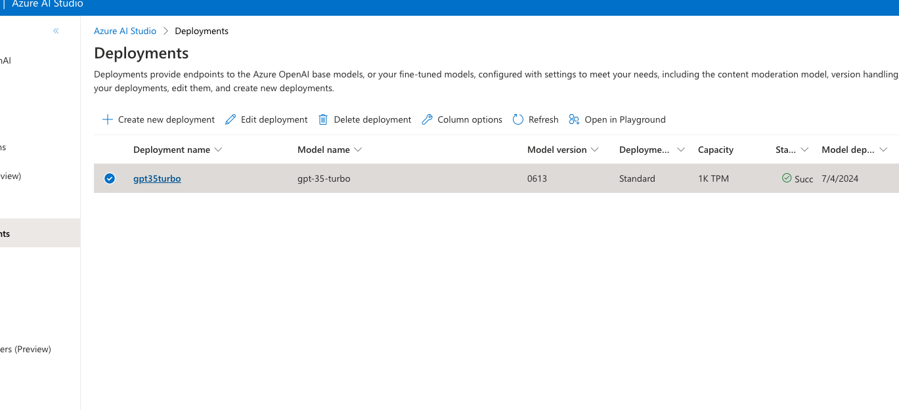
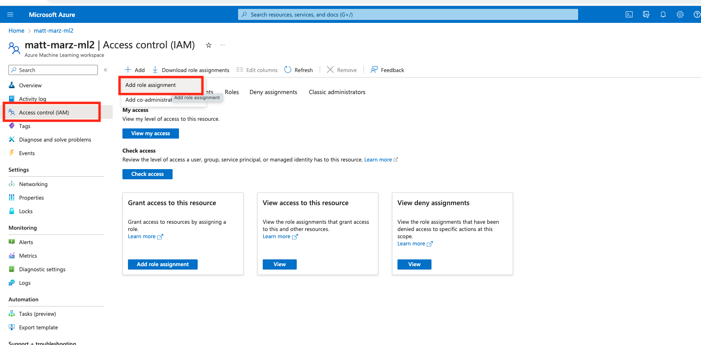

Azure OpenAI is a groundbreaking collaboration between two industry leaders, Microsoft Azure and OpenAI, designed to empower businesses with the future of AI technology. This powerful partnership offers seamless access to OpenAI's cutting-edge natural language processing models through the Azure cloud platform, enabling organizations to effortlessly integrate AI-driven insights, automation, and conversational capabilities into their applications, products, and services. With Azure OpenAI, you can unlock new dimensions of productivity, innovation, and customer engagement, giving your business a competitive edge in today's data-driven world.
In this quickstart we will build an architecture that demonstrates how to use Azure OpenAI with an AzureML Prompt Flow, AzureML Notebooks, Snowflake and the Snowflake + AzureML Connector to quickly generate results.
Prerequisites
- Familiarity with Snowflake and a Snowflake account
- Familiarity with Azure and an Azure account an AzureML workspace.
- Familiarity with Python
You'll Learn
- How to deploy an Azure OpenAI model with AzureML Prompt Flow
- Utilize the Snowflake + AzureML Connector to bring data from Snowflake into AzureML
- Utilize an AzureML Notebook with Snowpark to coordinate the movement of data from Snowflake to the Prompt Flow and bring results back to Snowflake
What You'll Need
- A free Snowflake Account
- Azure Account with AzureML. AzureML will need Public Preview services enabled.
What You'll Build
You will build an end-to-end Generative AI workflow using Azure OpenAI, AzureML and Snowflake
- Deploy an Azure OpenAI model
- Build an Prompt Flow
- Connect Snowflake data to AzureML
- Coordinate the flow with an AzureML Notebook
The end-to-end workflow will look like this: 
In this use case you will use purchase history data from a big box store, and leverage Azure Open AI to generate 3 suggested next items that can be marketed to the customer. Developing Next Best Offer (NBO) applications can often take months to develop, but with Snowflake and Azure we are able to set up this workload in hours.
Additionally, the data leverages demographic information (Median Age for the zip code the customer lives in). This data was pulled directly from AGS - Sociodemographics via the Snowflake Marketplace.
The first thing you will do is create a database and warehouse in your Snowflake environment. Run the below code in a Snowflake worksheet. We are using the accountadmin role here for demo purposes, but in production you will likely use a different role.
-- Create a new database (if not already created)
CREATE DATABASE IF NOT EXISTS retail_db;
USE DATABASE retail_db;
-- Create a new virtual warehouse (if not already created)
CREATE WAREHOUSE IF NOT EXISTS small_wh WITH WAREHOUSE_SIZE='X-SMALL';
-- Create purchase history table
CREATE OR REPLACE TABLE purchase_history (
id INT,
recent_purchases STRING,
zip STRING,
med_age INT
);
-- Insert example data without brand names
-- including data from Knoema Demographics Data Atlas
INSERT INTO purchase_history (id, recent_purchases, zip, med_age)
VALUES
(1, '1 Gallon Milk, 24 oz Bread, Dozen Eggs', '35404', 29),
(2, '16 oz Toothpaste, 12 oz Shampoo, 8 oz Soap', '33956', 64.7),
(3, '5 lb Potatoes, 3 lb Onions, 1 lb Carrots', '59703', 59.1),
(4, '2 lb Chicken, 1 lb Beef, 0.75 lb Salmon', '73043', 58.9),
(5, '18 oz Cereal, 6 oz Yogurt, 1.5 oz Granola Bars', '75412', 55.6),
(6, '16 oz Pasta, 24 oz Tomato Sauce, 3 cloves Garlic', '15467', 53.1),
(7, 'Bunch of Bananas, 1 lb Grapes, 16 oz Strawberries', '75217', 28.4),
(8, '8 oz Chips, 16 oz Salsa, 12 oz Guacamole, 10 ct Tortillas', '65622', 46.1),
(9, '6 Rolls Paper Towels, 12 Rolls Toilet Paper, 100 ct Tissues', '60546', 41.6),
(10, '1.5 qt Ice Cream, 12 inch Frozen Pizza, 16 oz Frozen Vegetables', '01002', 23.2);
-- View the generated data
SELECT * FROM retail_db.public.purchase_history;
The result of the final select statement should look like this: 
Head over to your AzureML workspace, go to the Compute blade and make sure you have a Compute Instance running (any of the standard instances will work for this quickstart).

Next we're going to register and import data from Snowflake in AzureML. In your AzureML Workspace go to the Data blade and click Data Connections tab. Next you will name your connection, select the Snowflake Category and define your target. The target should follow the below syntax:
jdbc:snowflake://<server>.<region>.azure.snowflakecomputing.com/?db=RETAIL_DB&warehouse=SMALL_WH
You will then enter the username and password for your Snowflake account.
- Note that additional authentication methods will soon be supported in the AzureML + Snowflake Connector.
You can reference the below image for an example of what the target should look like.

Now head to the Data Import tab and let's configure the actual import of the data. Select Snowflake, then name the new dataset something like "purchasehistory" and give it a description if you would like. Next choose the Snowflake connection you just created and enter the below query to retrieve the data from Snowflake (no semicolon in the query).
SELECT * FROM retail_db.public.purchase_history

Next select "Other Data Stores" and select "workspaceblobstore" and select any path to place the data. The final review should look like this.

Create the data import.
The Connector is natively connecting to Snowflake and creating and registering an MLTable file based off your Connection and query. After several minutes you should head over to the Data Assets tab on the Data blade and see a new asset with the name you provided to the import job. Click on that asset then click explore to verify the data has been imported.

Head to your Azure Portal home screen and create an Azure OpenAI service if you don't already have one. Place OpenAI in a Resource Group (or create a new one), use the East US Region, provide a unique name, select the Standard S0 pricing tier. 
Click Next then leave it open to all networks for this lab. Continue to click next then create the service. Once the service is created, access the explorer from the service by clicking explore. 
You can familiarize yourself with the Azure AI Studio later, but for now click on the Models blade then select the most recent gpt-35-turbo model and click deploy. Use the Auto-update to default Model version and name the deployment "gpt35turbo" and click create. The model should deploy in seconds. We will be using this out-of-the-box OpenAI model for this quickstart. 
Go back to your AzureML workspace and access the Prompt Flow blade and click Create then click create on the Standard flow.

Prompt Flow allows you to streamline your LLM-based application development. You can create executable flows that link LLMs, prompts, and Python tools through a UI graph. You can iterate and debug right from the Prompt Flow UI then deploy the LLM application. Here we will create a simple LLM application.
Once you have your first flow open head to the to and edit the name and make it generate_products.
Next delete the output, the echo and the joke prompts as they won't be needed.
Next, add an LLM prompt from the top and select a runtime from the top, for this lab it can be the compute instance that you created earlier in the lab (or just use a compute instance that you already have).
Your flow should now look like this:

In the LLM window select the Connection as the OpenAI service, select chat for the API and gpt35turbo for Deployment. Next copy and paste the below text into the prompt section:
system:
can you recommend three products to advertise to a customer who recently purchased these items.
just list the three recommended items no description. Number the items like this: 1. 2. 3.
{{purchase_history}}
also, consider the median age in the zip code where the customer lives in your recommendation. the median age in the zip code where the customer lives is:
{{med_age}}
This is the prompt that will be used to generate a response from the OpenAI model. You can see that you are prompting the model to provide a recommendation of the next 3 items for the customer based on two variables: their recent purchase history and the median age in the zip code where they live which will be coming from the Snowflake data that you registered in AzureML.
Scroll to the top in the input section and create two input variables named: purchase_history and med_age.
Scroll back down and click the blue button that says "Validate and Parse Input". This will recognize the two variables in the prompt. On the right of those newly identified variables select the respective inputs you just created above.
Scroll to the output section and add an output named ‘output' the select the output from the model in the value section (it should be the only option). Save the Prompt Flow, it should look like this:

If you would like you can enter sample values in the two value sections in the input section of the flow then run a test with the blue Run button. The test will run for several seconds and once completed you can scroll down to the Outputs section of the LLM window to see the output and recommended items.
Save the flow and then click deploy. Accept all of the default options by clicking next through the options and deploy. It will take several minutes to deploy the flow and create an endpoint.
Head back to your AzureML Workspace and click on the notebook blade and select open terminal and start/select your compute instance near the top of the screen. In the terminal run the below code to copy the notebook that will use to orchestrate inference.
git clone https://github.com/Snowflake-Labs/sf-samples.git
You may have to refresh the folder listing to see the new folder and openai.ipynb file that you will open. Your workspace should now look like this: 
Navigate to the openai.ipynb and open it using your active compute instance.
Slight Detour - Back to the Azure Portal
In the AzureML workspace head to the Endpoint blade and verify that your Prompt Flow has deployed, note the name of the endpoint. Now go to the Azure Portal and find the AzureML Workspace we're working in and select ‘Access Control (IAM)' the select Add and ‘Add role assignment': 
Select the ‘AzureML Data Scientist' role then select next. Select ‘Managed Identity' for ‘assign access to' then select members. In the right menu select your Azure subscription then ‘Machine Learning online endpoint' then select your prompt flow endpoint. Click Select then ‘Review and Assign' twice. 
You have just given the Prompt Flow endpoint the appropriate role to interact with the AzureML Workspace.
Back to the Notebook
Make sure that you're using the ‘Python 3.8 - AzureML'kernel in the top right. Next uncomment rows 2-4 in the first code block and run the block to install necessary packages.
In the second block of code enter in the 3 pieces of information: 1. your Azure subscription 2. the resource group name that contains your AzureML Workspace and 3. the name of your AzureML Workspace. Run this block of code to obtain a handle to the workspace.
Run the third block of code as-is to access the Azure dataset that was created with the AzureML + Snowflake Connector earlier in the lab.
In the fourth block of code you will have to copy and paste the Endpoint url and the API key from AzureML into the appropriate parts of the code. This is the endpoint to the Prompt Flow that you deployed. 
Run the fourth block of code to see the magic happen! This code parses the Snowflake data and passes it to the Prompt Flow endpoint to generate a response.
In the fifth code block fill in your Snowflake Account Identifier, username and password the run the code to write the recommendations back to a table in Snowflake.
Head back to your Snowflake account and run the below SQL to see your recommendations with customer id to be used by your organization.
SELECT * FROM retail_db.public.nbi_promo;

Troubleshooting pyarrow related issues
- If you have
pyarrowlibrary already installed, uninstall it from terminal before installing Snowpark. - If you do not have
pyarrowinstalled, you do not need to install it yourself; installing Snowpark automatically installs the appropriate version. - Do not reinstall a different version of
pyarrowafter installing Snowpark.
This quickstart is just that, a quick way to get you started with Azure OpenAI with Snowflake. You will want to consider the additional items below for enterprise-grade workloads:
- Using Environments in AzureML to load additional packages like Snowpark.
- Using an AzureML pipeline to automate and orchestrate the python script we built in the final step.
- Security and governance in AzureML with consideration for things like access control, authentication methods and networking.
- Consideration of Responsible AI practice with Azure OpenAI
What We covered
- How to deploy an Azure OpenAI model with AzureML Prompt Flow
- Utilize the Snowflake + AzureML Connector to bring data from Snowflake into AzureML
- Utilize an AzureML Notebook with Snowpark to coordinate the movement of data from Snowflake to the Prompt Flow and bring results back to Snowflake
Additional Considerations
- There are some great blogs on Medium regarding Snowpark, AzureML and using Snowflake with Azure.
- Snowpark with AzureML
- Snowflake and Azure OpenAI
If you have any questions, reach out to your Snowflake account team!